전기기사 (2003-05-25 기출문제)
1과목: 전기자기학
1. 진공내의 점(3,0,0)[m]에 4×10-9 C의 전하가 있다. 이 때 점(6,4,0)[m]의 전계의 크기는 몇 V/m 이며, 전계의 방향을 표시하는 단위벡터는 어떻게 표시되는가?
- 전계의 크기:
 , 단위벡터:
, 단위벡터: 
- 전계의 크기:
 , 단위벡터: 3ax+4ay
, 단위벡터: 3ax+4ay - 전계의 크기:
 , 단위벡터: ax+ay
, 단위벡터: ax+ay - 전계의 크기:
 , 단위벡터:
, 단위벡터: 
(정답률: 66%)
2. 무손실 전송회로의 특성 임피던스를 나타낸 것은?
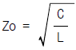
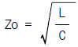
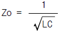
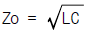
(정답률: 80%)

3. 자기인덕턴스 L1[H], L2[H]와 상호인덕턴스 M[H]와의 결합계수는?
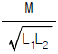
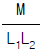
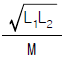
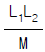
(정답률: 75%)
4. 지구는 태양으로부터 P[kW/m2]의 방사열을 받고 있다. 지구 표면에서의 전계의 세기는 몇 V/m 인가?
- 377P
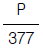
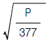
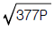
(정답률: 50%)
5. V=x2+y2[V]의 전위 분포를 갖는 전계의 전기력선의 방정식은? (단, A는 임의의 상수이다.)
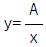
- y=Ax
- y=Ax2
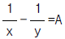
(정답률: 46%)
6. 그림과 같은 동축원통의 왕복 전류회로가 있다. 도체 단면에 고르게 퍼진 일정 크기의 전류가 내부 도체로 흘러 들어가고 외부 도체로 흘러 나올 때 전류에 의하여 생기는 자계에 대하여 옳지 않은 설명은?
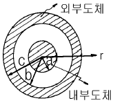
- 내부 도체내(r＜a)에 생기는 자계의 크기는 중심으로부터 거리에 비례한다.
- 두 도체사이(내부공간)(a＜r＜b)에 생기는 자계의 크기는 중심으로부터 거리에 반비례한다.
- 외부 도체내(b＜r＜c)에 생기는 자계의 크기는 중심으로부터 거리에 관계없이 일정하다.
- 외부 공간(r＞c)의 자계는 영(0)이다.
(정답률: 58%)
7. 대전 도체 표면의 전계의 세기는?
- 곡률이 크면 커진다.
- 곡률이 크면 적어진다.
- 평면일 때 가장 크다.
- 표면 모양에 무관하다.
(정답률: 61%)
8. 진공 중에 선전하 밀도가 λ[C/m]로 균일하게 대전된 무한히 긴 직선도체가 있다. 이 직선도체에서 수직거리r[m]점의 전계의 세기는 몇 V/m 인가?
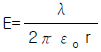
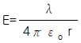
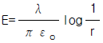
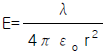
(정답률: 60%)
9. 자유공간 중에서 자계 H =xz2a x[A/m]일 때 0 ≤ x ≤ 1, 0≤z≤1, y=0인 면을 통과하는 전전류는 몇 A 인가?
- 0.5
- 1.0
- 1.5
- 2.0
(정답률: 31%)
10. 전하 혹은 전류 중심으로부터 거리 R에 반비례하는 것은?
- 균일 공간 전하밀도를 가진 구상전하 내부의 전계의 세기
- 원통의 중심축 방향으로 흐르는 균일 전류밀도를 가진 원통도체 내부의 자계의 세기
- 전기쌍극자에 기인된 외부 전계내의 전위
- 전류에 기인된 자계의 벡터포텐샬
(정답률: 45%)
11. 그림에서 단자 ab간에 V의 전위차를 인가할 때 C1의 에너지는?
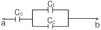
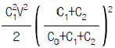
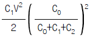
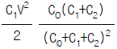
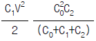
(정답률: 54%)
12. 그림과 같이 구형의 자성체가 병렬로 접속된 경우 전체의 자기저항 RT는 몇 AT/Wb가 되겠는가? (단, 가로방향 즉, 200mm방향임)
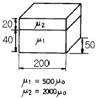
- RT = 2.7×104
- RT = 5.3×104
- RT = 1.1×10-6
- RT = 1.9×10-6
(정답률: 34%)
13. 균일한 자계에 수직으로 입사한 수소이온의 원운동의 주기는 2πx10-5 sec 이다. 이 균일 자계의 자속밀도는 몇 Wb/m2 인가? (단, 수소이온의 전하와 질량의 비는 2×107 C/kg 이다.)
- 2.5×10-3
- 3.2×10-3
- 5×10-3
- 6.2×10-3
(정답률: 24%)
14. 간격 d의 평행 도체판간에 비저항ρ인 물질을 채웠을 때 단위 면적당의 저항은?
- ρd
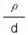
- ρ-d
- ρ+d
(정답률: 47%)
15. 평행한 두 도선간의 전자력은? (단, 두 도선간의 거리는 r[m]라 한다.)
- r2에 반비례
- r2에 비례
- r에 반비례
- r에 비례
(정답률: 57%)
16. 균일하게 자화된 체적 0.01m3인 막대 자성체가 500A.m2인 자기모멘트를 가지고 있을 때, 이 막대 자성체의 자속밀도가 500mT이었다면 이 막대 자성체내의 자계의 세기는 몇 kA/m 인가?
- 318
- 328
- 338
- 348
(정답률: 19%)
17. 그림에서 전계와 전속밀도의 분포 중 맞는 것은? (단, 경계면에 전하가 없는 경우이다.)
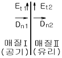
- Et1=0, Dn1=ρs
- Et2=0, Dn2=ρs
- Et1=Et2, Dn1=Dn2
- Et1=Et2=0, Dn1=Dn2=0
(정답률: 57%)
18. 평행판 콘덴서에 어떤 유전체를 넣었을 때 전속밀도가 2.4×10-7C/m2이고, 단위 체적 중의 에너지가 5.3×10-3 Ｊ/m3 이었다. 이 유전체의 유전률은 몇 F/m 인가?
- 2.17×10-11
- 5.43×10-11
- 5.17×10-12
- 5.43×10-12
(정답률: 60%)
19. 막대자석의 회전력을 나타내는 식으로 옳은 것은? (단, 막대자석의 자기모멘트 M [wbㆍm]와 균등자계 H [A/m]와의 이루는 각 θ는 0°＜θ＜90° 라 한다.)
- M ×H [Nㆍm/rad]
- H ×M [Nㆍm/rad]
- μo H ×M [Nㆍm/rad]
- M ×μo H [Nㆍm/rad]
(정답률: 65%)
20. 와전류의 방향은?
- 일정하지 않다.
- 자력선의 방향과 동일하다.
- 자계와 평행되는 면을 관통한다.
- 자속에 수직되는 면을 회전한다.
(정답률: 54%)
2과목: 전력공학
21. 표피효과에 대한 설명으로 옳은 것은?
- 전선의 단면적에 반비례한다.
- 주파수에 비례한다.
- 전압에 비례한다.
- 도전률에 반비례한다.
(정답률: 60%)
22. 1일의 평균 사용유량이 35m3/s인 수력지점에 조정지를 설치하여 첨두부하시 5시간, 최대 65m3/s의 물을 사용하려고 한다. 이에 필요한 조정지의 유효 저수량은 몇 m3 인가?
- 9000
- 540000
- 648000
- 900000
(정답률: 39%)
23. 루프(loop)배전방식에 대한 설명으로 옳은 것은?
- 전압강하가 작은 이점이 있다.
- 시설비가 적게 드는 반면에 전력손실이 크다.
- 부하밀도가 적은 농ㆍ어촌에 적당하다.
- 고장시 정전범위가 넓은 결점이 있다.
(정답률: 47%)
24. 피뢰기의 직렬 갭(gap)의 작용은?
- 이상전압의 파고치를 저감시킨다.
- 상용주파수의 전류를 방전시킨다.
- 이상전압이 내습하면 뇌전류를 방전하고, 속류를 차단하는 역할을 한다.
- 이상전압의 진행파를 증가시킨다.
(정답률: 67%)
25. 정격 10kVA의 주상변압기가 있다. 이것의 2차측 일부하곡선이 그림과 같을 때 1일의 부하율은 몇 % 인가?
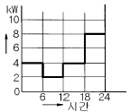
- 52.35
- 54.35
- 56.25
- 58.25
(정답률: 46%)
26. 종축에 절대온도 T, 횡축에 엔트로피 S를 취할 때 T-S 선도에 있어서 단열변화를 나타내는 것은?
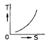
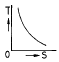
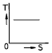
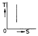
(정답률: 44%)
27. 다도체를 사용한 송전선로가 있다. 단도체를 사용했을 때와 비교할 때 옳은 것은? (단, L은 작용인덕턴스이고, C는 작용정전용량이다.)
- L 과 C 모두 감소한다.
- L 과 C 모두 증가한다.
- L 은 감소하고, C 는 증가한다.
- L 은 증가하고, C 는 감소한다.
(정답률: 58%)
28. 가압수형 원자력발전소에 사용하는 연료, 감속재 및 냉각재로 적당한 것은?
- 연료:천연우라늄, 감속재:흑연, 냉각재:이산화탄소
- 연료:농축우라늄, 감속재:중수, 냉각재:경수
- 연료:저농축우라늄, 감속재:경수, 냉각재:경수
- 연료:저농축우라늄, 감속재:흑연, 냉각재:경수
(정답률: 40%)
29. 발.변전소에서 사용되는 상분리모선(Isolated phase bus)의 특징으로 틀린 것은?
- 절연 열화가 적고 선간단락이 거의 없다.
- 다도체로서 대전류를 흘릴 수 있다.
- 기계적 강도가 크고 보수가 용이하다.
- 폐쇄되어 있으므로 안전도가 크고 외부로부터 손상을 받지 않는다.
(정답률: 27%)
30. 송전 계통의 중성점 접지방식에서 유효접지라 하는 것은?
- 저항접지 및 직접접지를 말한다.
- 1선 지락사고시 건전상의 전위가 상용전압의 1.3배 이하가 되도록 중성점 임피던스를 억제한 중성점접지 방식을 말한다.
- 리액터 접지방식 이외의 접지방식을 말한다.
- 저항접지를 말한다.
(정답률: 59%)
31. 전원으로부터의 합성임피던스가 0.25%(10000kVA기준)인 곳에 설치하는 차단기의 용량은 몇 MVA 인가?
- 250
- 400
- 2500
- 4000
(정답률: 42%)
32. 전력선 반송보호계전방식의 고장선택 방법에 해당되는 것은?
- 방향비교방식
- 전압차동보호방식
- 방향거리모선보호방식
- 고주파 억제식 비율차동보호방식
(정답률: 31%)
33. 장거리 송전로에서 4단자 정수가 같은 것은?
- A =B
- B =C
- C =D
- A =D
(정답률: 70%)
34. 가스절연개폐장치(GIS)의 특징이 아닌 것은?
- 감전사고 위험 감소
- 밀폐형이므로 배기 및 소음이 없음
- 신뢰도가 높음
- 변성기와 변류기는 따로 설치
(정답률: 56%)
35. 가공전선을 200m의 경간에 가설하여 그 이도가 5m이었다. 이도를 6m로 하려면 이도를 5m로 하였을 때 보다 전선이 몇 cm 더 필요하겠는가?
- 8
- 10
- 12
- 15
(정답률: 36%)
36. 발전기 보호용 비율차동계전기의 특성이 아닌 것은?
- 외부 단락시 오동작을 방지하고 내부고장시에만 예민하게 동작한다.
- 계전기의 최소동작전류를 일정치로 고정시켜 비율에 의해 동작한다.
- 발전자 전류와 계전기의 차전류의 비율에 의해 동작 한다.
- 외부 단락으로 인한 전기자 전류의 격증시 계전기의 최소동작전류도 증대된다.
(정답률: 23%)
37. 동작전류의 크기에 관계없이 일정한 시간에 동작하는 특성을 가진 계전기는?
- 순한시계전기
- 정한시계전기
- 반한시계전기
- 반한시정한시계전기
(정답률: 64%)
38. 3상3선식 송전선로에서 각 선의 대지정전용량이 0.5096㎌이고, 선간정전용량이 0.1295㎌일 때 1선의 작용정전용량은 몇 ㎌ 인가?
- 0.6391
- 0.7686
- 0.8981
- 1.5288
(정답률: 59%)
39. 과도안정 극한전력이란?
- 부하가 서서히 감소할 때의 극한전력
- 부하가 서서히 증가할 때의 극한전력
- 부하가 갑자기 사고가 났을 때의 극한전력
- 부하가 변하지 않을 때의 극한전력
(정답률: 53%)
40. 선로개폐기(LS)에 대한 설명으로 틀린 것은?
- 책임 분계점에 전선로를 구분하기 위하여 설치한다.
- 3상 선로개폐기는 3개가 동시에 조작되게 되어 있다.
- 부하상태에서도 개방이 가능하다.
- 최근에는 기중부하개폐기나 LBS로 대체되어 사용하고 있다.
(정답률: 52%)
3과목: 전기기기
41. 전압을 일정하게 유지하기 위해서 이용되는 다이오드는?
- 정류용 다이오드
- 바랙터 다이오드
- 바리스터 다이오드
- 제너 다이오드
(정답률: 55%)
42. 동기기에 있어서 동기 임피던스와 단락비와의 관계는?
- 동기임피이던스[Ω]=
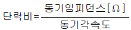
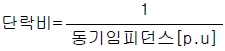
- 동기임피던스[p.u]=단락비
(정답률: 65%)
43. 직권계자 권선저항 0.2[Ω], 전기자 저항 0.3[Ω]의 직권 전동기에 200[V]를 가하였더니 부하전류 20[A]였다. 이때 전동기의 속도[rpm]는? (단, 기계정수는 3.0 이다)
- 1140
- 1560
- 1710
- 1930
(정답률: 29%)
44. 무부하에서 자기여자로 전압을 확립하지 못하는 직류 발전기는?
- 직권 발전기
- 분권발전기
- 타여자 발전기
- 차동복권 발전기
(정답률: 33%)
45. 3상 유도전동기로 직류분권발전기를 구동하여 직류를 얻어 사용했었다. 유도기의 1차측 3선중 2선을 바꾸어 결선을 하고 운전하였다면 직류분권발전기의 전압은?
- 전압이 0 이 된다.
- 과전압이 유도된다.
- +, -극성이 바뀐다.
- +, -극성이 변함없다
(정답률: 26%)
46. 동기발전기의 퍼센트 동기임피던스가 83[%]일 때 단락비는 얼마인가?
- 1.0
- 1.1
- 1.2
- 1.3
(정답률: 64%)
47. 직류전동기의 규약효율은?
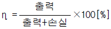
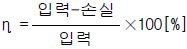
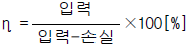
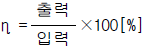
(정답률: 55%)
48. 병렬운전하는 두 대의 3상동기발전기에서 무효순환전류가 흐르는 경우는?
- 계자전류가 변할 때
- 위상이 변할 때
- 파형이 변할 때
- 부하가 변할 때
(정답률: 37%)
49. 직류기의 철손에 관한 설명으로 옳지 않은 것은?
- 철손에는 풍손과 와전류손 및 저항손이 있다.
- 전기자 철심에는 철손을 작게 하기 위하여 규소강판을 사용한다.
- 철에 규소를 넣게 되면 히스테리시스손이 감소한다.
- 철에 규소를 넣게 되면 전기 저항이 증가하고 와 전류손이 감소한다.
(정답률: 54%)
50. 부하용량(선로출력) 6600[kVA]이고, 전압조정을 6600± 660[V]로 하려는 선로에 3상 유도전압조정기의 용량은?
- 6000[kVA]
- 3000[kVA]
- 1500[kVA]
- 600[kVA]
(정답률: 28%)
51. 2대의 정격이 같은 1000[KVA]의 단상변압기의 임피던스 전압이 8[%]와 9[%]이다. 이것을 병렬로 하면 몇[KVA]의 부하를 걸 수 있는가?
- 2100
- 2200
- 1889
- 2125
(정답률: 33%)
52. 어떤 정류회로의 부하전압이 50[V]이고 맥동률 3[%]이면 직류 출력전압에 포함된 교류분은 몇[V]인가?
- 1.2
- 1.5
- 1.8
- 2.1
(정답률: 58%)
53. 변압기에서 제3고조파의 영향으로 통신장해를 일으키는 3상 결선법은?
- △-△결선
- Y-Y결선
- Y-△결선
- △-Y결선
(정답률: 63%)
54. 그림과 같은 단상 전파제어회로의 전원 전압의 최대치가 2300[V]이다. 저항 2.3[Ω ], 유도리액턴스가 2.3[Ω ]인 부하에 전력을 공급하고자 한다. 제어 범위는?
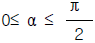
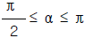
- 0≤ α ≤ π
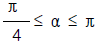
(정답률: 23%)
55. 전압 2200[V], 무부하 전류 0.088[A]인 변압기의 철손이 110[W]이었다. 자화전류는?
- 약 0.⑤[A]
- 약 0.038[A]
- 약 0.0724[A]
- 약 0.088[A]
(정답률: 37%)
56. 변압기권선을 건조하는데 맞지 않은 것은?
- 진공법
- 단락법
- 반환부하법
- 열풍법
(정답률: 41%)
57. 유도 전동기와 직결된 전기동력계(다이나모메터)의 부하전류를 증가하면 유도전동기의 속도는?
- 증가한다.
- 감소한다.
- 변함이 없다.
- 동기 속도로 회전한다.
(정답률: 28%)
58. 동기전동기의 여자전류를 증가하면 어떤 현상이 생기나?
- 전기자 전류의 위상이 앞선다.
- 난조가 생긴다.
- 토크가 증가한다.
- 앞선 무효 전류가 흐르고 유도 기전력은 높아진다.
(정답률: 36%)
59. 누설변압기의 특성은 어떤것인가?
- 수하 특성
- 정전압 특성
- 저 저항 특성
- 저 임피던스 특성
(정답률: 45%)
60. 전동기축의 벨트축 지름이 28[cm] 매분 1140회전하여 20[KW]를 전달하고 있다. 벨트에 작용하는 힘은?
- 약 122 [Kg]
- 약 168 [Kg]
- 약 212 [Kg]
- 약 234 [Kg]
(정답률: 17%)
4과목: 회로이론 및 제어공학
61. 시간 구간 a, 진폭이 1/a인 단위 펄스에서 a → 0 에 접근할 때의 단위 충격 함수에 대한 Laplace 변환은?
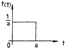
- a
- 1
- 0
- 1/a
(정답률: 44%)
62. s평면의 우반면에 3개의 극점이 있고, 2개의 영점이 있다 이때 다음과 같은 설명 중 어느 나이퀴스트 선도일 때 시스템이 안정한가?
- (-1, j0) 점을 반 시계방향으로 1번 감쌌다.
- (-1, j0) 점을 시계방향으로 1번 감쌌다.
- (-1, j0) 점을 반 시계방향으로 5번 감쌌다.
- (-1, j0) 점을 시계방향으로 5번 감쌌다.
(정답률: 30%)
63. 전원과 부하가 △결선된 3상 평형회로가 있다. 전원 전압이 200[V],부하 1상의 임피던스가 6+j8[Ω]라면 선전류는 몇 [A]인가?
- 20
- 28.3
- 34.6
- 47.2
(정답률: 54%)
64. 아래와 같은 시스템에서 이 시스템이 안정하기 위한 K의 범위를 구하면?
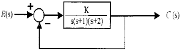
- 0 ＜ K ＜ 6
- 1 ＜ K ＜ 5
- -1 ＜ K ＜ 6
- -1 ＜ K ＜ 5
(정답률: 56%)
65. 기전력 3[V], 내부 저항 0.2[Ω ]인 전지 6개를 직렬로 접속하여 단락시켯을 때의 전류[A]는?
- 30
- 25
- 15
- 10
(정답률: 48%)
66. 안정된 제어계의 특성근이 2개의 공액복소근을 가질때이 근들이 허수축 가까이에 있는 경우 허수축에서 멀리 떨어져 있는 안정된 근에 비해 과도응답 영향은 어떻게 되는가?
- 천천히 사라진다.
- 영향이 같다
- 빨리 사라진다.
- 영향이 없다.
(정답률: 42%)
67. 3상 불평형 전압에서 역상전압이 50[V]이고 정상전압이 250[V] 영상전압이 20[V]이면, 전압의 불평형률은 몇[%]인가?
- 10
- 15
- 20
- 25
(정답률: 56%)
68. R =2[Ω ], L= 10[mH], C= 4[μF]의 직렬 공진 회로의 Q는?
- 25
- 45
- 65
- 85
(정답률: 46%)
69. 그림과 같은 회로망은 어떤 보상기로 사용할 수 있는가? (단, 1≪R1C인 경우로 한다.)
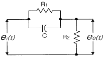
- 진상보상기
- 지상보상기
- 지ㆍ진상보상기
- 진ㆍ지상보상기
(정답률: 50%)
70. T를 샘플주기라고 할때 Z-변환은 라프라스 변환 함수의 S 대신 어느것을 대입하여야 하는가?
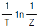
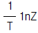
- T1nZ
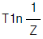
(정답률: 41%)
71. 루프 전달함수 G(s)H(s)=
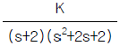
의 근궤적에서 S=-1+j에서의 출발각(K＞0)은?- 30°
- 45°
- 60°
- 90°
(정답률: 33%)
72. 어떤 계를 표시하는 미분 방정식이
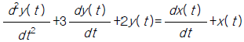
라고 한다. x(t)는 입력, y(t)는 출력이라고 한다면 이 계의 전달 함수는 어떻게 표시되는가?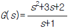
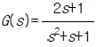
(정답률: 56%)
73. 다음과 같은 회로에서 t=0+ 에서 스위치 K 를 닫았다. i1(0+), i2(0+)는 얼마인가?
- i1(0+) = 0, i2(0+) = V/R2
- i1(0+) = V/R1, i2(0+) = 0
- i1(0+) = 0, i2(0+) = 0
- i1(0+) = V/R1, i2(0+) = V/R2
(정답률: 41%)
74. 방정식으로 표시되는 제어계가 있다. 이 계를 상태 방정식 로 나타내면 계수 행렬 A는 어떻게 되는가?
(정답률: 61%)
75. 다음 회로의 전달함수는?
(정답률: 49%)
76. 단위 계단 입력에 대한 정상편차가 유한값이면 이 계는 무슨 형인가?
- 0
- 1
- 2
- 3
(정답률: 40%)
77. 회로에서 4단자 정수 A, B, C, D 의 값은?
(정답률: 54%)
78. 분포정수 선로에서 위상 정수를 β [rad/m]라 할 때 파장은?
- 2π β
- 2π/β
- 4π β
- 4π/β
(정답률: 60%)
79. 비정현파를 바르게 나타낸 것은?
- 교류분+고조파+기본파
- 직류분+기본파+고조파
- 기본파+고조파-직류분
- 직류분+고조파-기본파
(정답률: 48%)
80. 다음 회로는 무엇을 나타낸 것인가?
- AND
- OR
- Exclusive OR
- NAND
(정답률: 48%)
5과목: 전기설비기술기준 및 판단기준
81. 일반주택의 저압 옥내배선을 점검하였더니 다음과 같이 시공되어 있었다. 잘못 시공된 것은?
- 욕실의 전등으로 방습 형광등이 시설되어 있다.
- 단상3선식 인입개폐기의 중성선에 동판이 접속되어 있었다.
- 합성수지관공사의 관의 지지점간의 거리가 2m로 되어 있었다.
- 금속관공사로 시공하였고 ＩV전선이 사용되었다.
(정답률: 39%)
82. 고압 가공전선로의 지지물에 시설하는 통신선의 높이는 도로를 횡단하는 경우 지표상 6m이상으로 하여야 한다. 그러나 교통에 지장을 줄 우려가 없을 경우에는 지표상 몇 m 까지로 감할 수 있는가?
- 4
- 4.5
- 5
- 5.5
(정답률: 43%)
83. 방직공장의 구내 도로에 220V 조명등용 가공전선로를 시설하고자 한다. 전선로의 경간은 몇 m 이하이어야 하는가?
- 20
- 30
- 40
- 50
(정답률: 36%)
84. 저압전로를 절연변압기로 결합하여 특별고압 가공전선로의 철탑 최상부에 설치한 항공장해등에 이르는 저압전로가 있다. 이 절연변압기의 부하측 1단자 또는 중성점에는 제 몇 종 접지공사를 하여야 하는가?
- 제1종접지공사
- 제2종접지공사
- 제3종접지공사
- 특별제3종접지공사
(정답률: 37%)
85. 전동기 등에만 이르는 저압 옥내전로의 과전류 차단기는 그 과전류 차단기에 직접 접속하는 부하측의 전선의 허용전류가 40A인 경우 정격전류가 몇 A 이하인 것을 사용하여야 하는가?
- 50
- 60
- 100
- 125
(정답률: 21%)
86. 금속관공사를 콘크리트에 매설하여 시행하는 경우 관의 두께는 몇 ㎜ 이상인가?
- 1.0
- 1.2
- 1.4
- 1.6
(정답률: 58%)
87. 차량 기타 중량물의 압력을 받을 우려가 없는 장소에 지중 전선로를 직접 매설식에 의하여 시설하는 경우, 매설 깊이는 최소 몇 cm 이상으로 하면 되는가?(2021년 변경된 KEC 규정 적용됨)
- 30
- 60
- 80
- 100
(정답률: 61%)
88. 특별고압절연전선을 사용한 22900V가공전선과 안테나와의 최소 이격거리는 몇 m 인가? (단, 중성선 다중접지식의 것으로 전로에 지기가 생겼을 때, 2초이내에 자동적으로 이를 전로로부터 차단하는 장치가 되어 있음)
- 1.0
- 1.2
- 1.5
- 2.0
(정답률: 19%)
89. 사용전압 22900V 가공전선이 건조물과 제2차 접근상태로 시설되는 경우에 22900V 가공전선로의 보안공사 종류는?
- 고압 보안공사
- 제1종 특별고압 보안공사
- 제2종 특별고압 보안공사
- 제3종 특별고압 보안공사
(정답률: 47%)
90. 사용전압이 380V인 저압 보안공사에 사용되는 경동선은 그 지름이 최소 몇 mm 이상의 것을 사용하여야 하는가?
- 2.0
- 2.6
- 4
- 5
(정답률: 21%)
91. 통신상의 유도장해를 방지하기 위하여 직류 단선식 전기 철도용 급전선로가 단선식 전화선로를 제외한 기설 가공 약전류전선로와 병행하여 시설될 때, 특별한 경우를 제외하고 이격거리는 몇 m 이상으로 하여야 하는가?
- 2.5
- 3
- 3.5
- 4
(정답률: 11%)
92. 전로의 사용전압이 400V미만이며, 대지전압이 150V이하인 경우, 이 전로의 절연저항은 몇 MΩ 이상이어야 하는가?
- 0.1
- 0.2
- 0.3
- 0.4
(정답률: 35%)
93. 발전소에는 필요한 계측장치를 시설해야 한다. 다음 중 시설을 생략해도 되는 계측장치는?
- 발전기의 전압 및 전류
- 주요 변압기의 역률
- 발전기의 고정자 온도
- 특별고압용 변압기의 온도
(정답률: 52%)
94. 제1종특별고압보안공사로 시설하는 전선로의 지지물로 사용할 수 없는 것은?
- 철탑
- B종철주
- B종철근콘크리트주
- 목주
(정답률: 55%)
95. 출퇴표시등회로에 전기를 공급하기 위한 변압기는 2차측 전로의 사용전압이 몇 V 이하인 절연변압기 이어야 하는가?
- 40
- 60
- 80
- 100
(정답률: 53%)
96. 사용전압이 400V이상인 저압 가공전선을 동복강선 또는 케이블인 경우 이외에 시가지에 시설하는 것은 지름 몇 mm 의 경동선 또는 이와 동등이상의 세기 및 굵기의 것이어야 하는가?
- 3.2
- 3.5
- 4
- 5
(정답률: 21%)
97. 과전류차단기로 저압전로에 사용하는 정격전류 30A인 퓨즈를 수평으로 붙인 경우 정격전류의 2배의 전류를 통하였을 때 몇 분안에 용단되어야 하는가?
- 2
- 4
- 6
- 8
(정답률: 47%)
98. 버스덕트공사에 의한 저압 옥내배선의 사용전압이 400V 미만인 경우 덕트에는 몇 종 접지공사를 하여야 하는가?
- 제1종접지공사
- 제2종접지공사
- 제3종접지공사
- 특별제3종접지공사
(정답률: 50%)
99. 건조한 장소로서 전개된 장소에 한하여 고압옥내배선을 할 수 있는 것은?
- 애자사용공사
- 합성수지관공사
- 금속관공사
- 가요전선관공사
(정답률: 51%)
100. 고압가공전선에 경동선을 사용하는 경우 안전율은 얼마 이상이 되는 이도로 시설하여야 하는가?
- 2.0
- 2.2
- 2.5
- 2.6
(정답률: 43%)